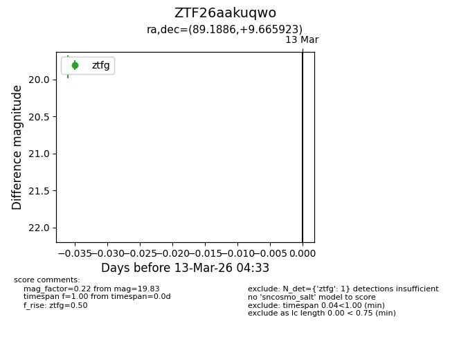
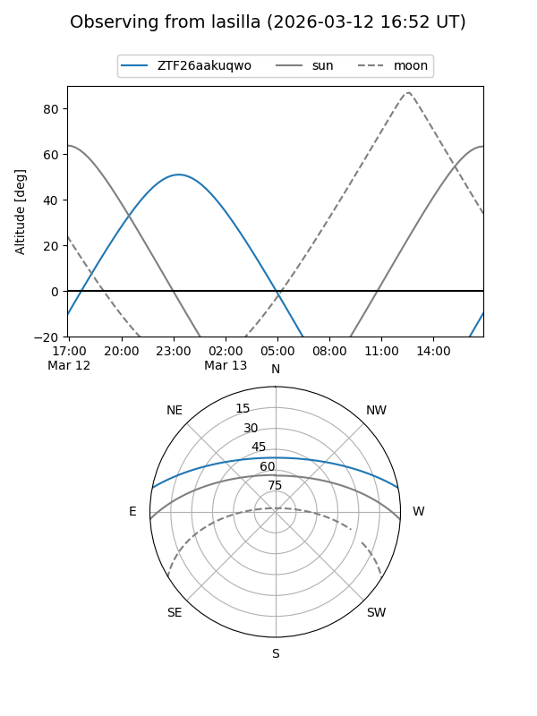
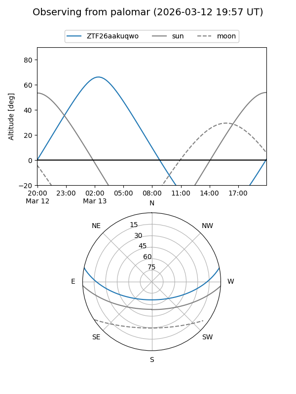

ZTF26aakuqwo
Target ZTF26aakuqwo at 2026-03-13 04:35
Aliases and brokers:
FINK: link
Lasair: link
ALeRCE: link
alt names
ZTF26aakuqwo (ztf,fink_ztf)
Coordinates:
equatorial (ra, dec) = 89.1886,+9.66592
equatorial (HMS+DMS) = 05:56:45.27,+09:39:57.32
galactic (l, b) = (197.9873,-7.51559)
Flags:
Photometry:
last ztfg=19.83
1 ztfg detections
Lightcurve

Visibility


Additional plots